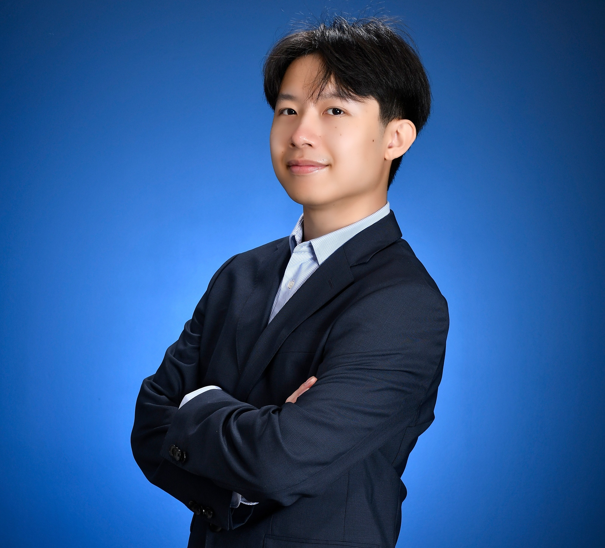

About
A Little About Me
I'm a Mechatronics Engineering graduate driven by my love for "cool tech" and have a habit of throwing myself headfirst into the chaos of mechanical design and complex, integrated systems. I thrive in the trenches of development and persistent iteration, whether that means tuning a PID controller at 2am or CADing a chassis that has to survive a dozen falls. Off the clock, you can find me unwinding with some fast-paced badminton rallies, diving into video games, or satisfying my inner foodie and love for exploration throughout my travels.
Detail Oriented
Versatile
Mechatronics
Foodie & Gamer

MAP STATUS: ACTIVE | 7 LOCATIONS
LIVED
VISITED
ZOOM 1.0×
Interactive World Map of Places I've Lived + Stayed
SCROLL TO ZOOM · DRAG TO PAN · HOVER PINS FOR DETAILS
Interactive Concept 7 · Robotics
Projects
Hover each cardClick to view blueprint
ROBOTICS · CONTROL SYSTEMS
Bipedal self-balancing robot with cascaded PID control, dual-core ESP32, IMU tilt estimation, and wireless BLE control.
View Full Blueprint →
Self-Balancing Wheeled Bipedal Robot
Prototype: Grass | MECH 421/423 Final Project
OPTOELECTRONICS
🔬
Cryogenic logic gate arrays operating at 15mK for quantum computation research.
View Full Blueprint →
Quantum Computation Array
Cryogenic Logic Cluster Node
ROBOTICS · ACTUATION
🤖
Force-controlled exoskeletal limbs with impedance modulation for rehabilitation applications.
View Full Blueprint →
Exo-Skeletal Kinetic Actuator
Precision Bio-Mechanical Force Output
CAPSTONE · MECHATRONICS
Development of a semi-autonomous trash retrieval drone system for object retrieval with downwash mitigation.
View Full Blueprint →
Trash Retrieval Drone
Mechatronics Capstone Project
CAPSTONE · DOWNSCALED DESIGN
Downscaled design of the Trash Retrieval Drone to minimize weight for downwash mitigation and improve portability.
View Full Blueprint →
Smaller Litter Drone
Downscaled Trash Retrieval Drone - Downwash Mitigation Tests
CAPSTONE · SOFT ROBOTICS
Mechanically actuated soft gripper designed with logarithmic spirals for adaptive and flexible grabbing.
View Full Blueprint →
Octopus Claw
Soft Robotics Research & Testing
ENERGY · SYSTEMS
🌊
Compact wave energy converter with real-time adaptive impedance matching to maximize power capture.
View Full Blueprint →
Wave Energy Converter
Adaptive Ocean Power Capture System
Career
May 2025 toAug 2025
Summer Research Student - Cardiac Surgery Department
Ted Rogers Centre for Heart Research + University Health Network
- Designed a framework for a secure data collection system for aortic biomechanics research using REDCap, ensuring patient confidentiality and anonymity.
- Built custom MATLAB scripts to process and restructure existing research data for enhanced data security and streamlined management capabilities.
- Customized web elements using HTML and CSS to improve visual consistency and mobile compatibility.
- Participated in a company-sponsored animal dissection study for aortic heart research.
Feb 2024 toAug 2024
Maintenance/Reliability Engineering Co-op
The Dow Chemical Company
- Reprogrammed an industrial oven PID controller and created safe operating procedures, shortening maintenance and improving operator safety.
- Designed flange covers for shut-down pressure equipment in SolidWorks to improve the safety and repair efficiency for millwrights.
- Redesigned equipment cleaning procedures, reducing corrosion and extending equipment service life.
- Coordinated management of change (MOC) for facility renovations, equipment upgrades, and technical documentation to ensure compliant implementation and proper record keeping.
- Communicated with vendors, work coordinators, and operators to streamline equipment bill of materials, stocking, and upgrades to ensure up-to date management and procurement of critical equipment.
Sept 2023 toFeb 2024
Fixed Asset Integrity Engineering Co-op
The Dow Chemical Company
- Collaborated with multiple plant operations teams to author and update Corrosion Control Documents and Integrity Operating Windows, improving reliability across all site operations.
- Revised ABSA regulatory documentation to ensure regulatory compliance and maintain the site’s permission to operate.
Sept 2022 toAug 2026
Senior Aircraft and Administrative Member
UBC Uncrewed Aircraft Systems (UAS)
- Designed airfoil frames, landing gear, and electrical equipment mounts for a VTOL reconnaissance aircraft.
- Collaborated with an interdisciplinary team to develop comprehensive quadcopter and VTOL CAD assemblies in Onshape, creating functional autonomous drones for competition.
Oct 2021 toJul 2022
Frame Subteam Member
SUBC - UBC's Submarine Design Team
- Designed 3D models of aluminum extrusion attachments for the outer hull of a submarine.
- Collaborated to manufacture an aluminum frame for a submarine consistenting of aluminum extrusions and water jet cut sheets.
Sept 2020 toJul 2021
Mechanical Subsystem General Member
University of Toronto Aerospace Team
- Modelled servo mounts, camera mounts, and alignment frames for an autonomous driving payload carried by an aircraft.
- Designed a custom team-wide Google Slides presentation theme for competition.
Academic Background
Education
BASc, Mechanical Engineering - Mechatronics Specialization
University of British Columbia
2021 to 2026: CGPA = 87.6%
IB Diploma Programme
International Baccalaureate
2019 to 2021: Biology HL, Global Politics HL, English Literature HL
Let's Build Something
Ready to work
with purpose?
Whether you're hiring, collaborating, or just curious, reach out. I'm always open to interesting problems.
Overview
Motivation
🖼
1 / 1